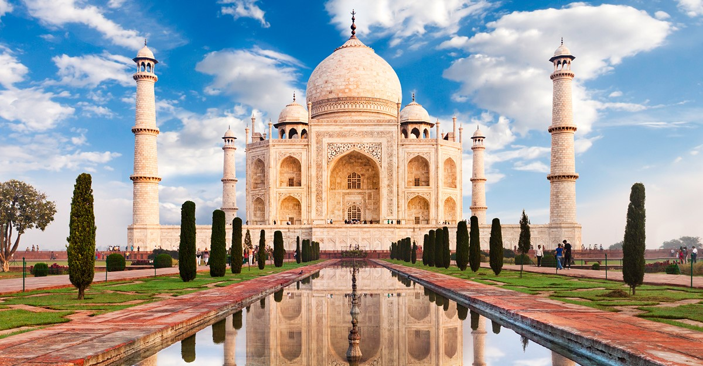

|  |
El Taj Mahal fue nombrado el 7 de julio de 2007 como parte de las nuevas siete maravillas del mundo moderno. Incontables turistas han visitado el lugar —más de 3 000 000 en 2004 según la BBC—, convirtiéndolo en una de las atracciones turísticas más importantes de la India. |
El Taj Mahal es considerado el más bello ejemplo de palacio, estilo que combina elementos de las arquitecturas islámica, persa, india e incluso turca. Este monumento ha logrado especial notoriedad por el carácter romántico de su inspiración. |
|